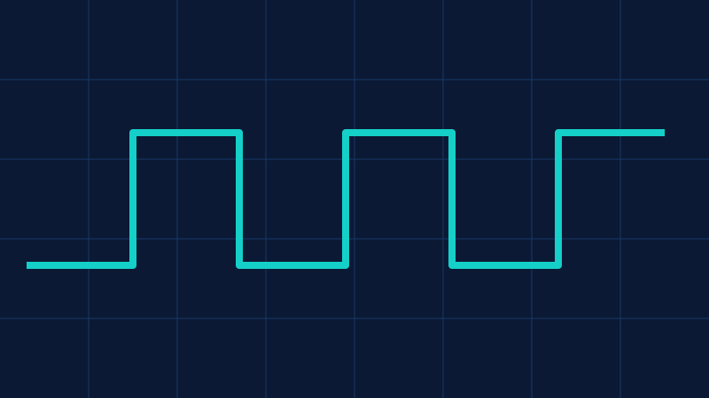
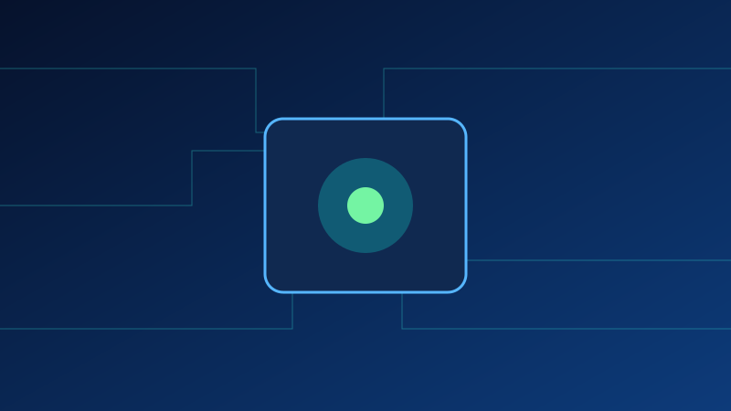
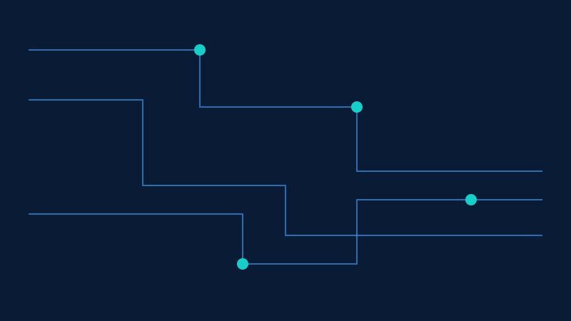

Beginner
Signal Fundamentals: Core Concept Deep Dive
Build an accurate mental model using simplified but precise explanations.
Read MoreTime and frequency domain, sampling, noise, and signal integrity basics.


Build an accurate mental model using simplified but precise explanations.
Read More
Apply theory with step-by-step design and measurement checkpoints.
Read MoreEvaluate performance, cost, noise, and reliability in real-world constraints.
Read MoreContinue learning with adjacent topics to strengthen system-level understanding.